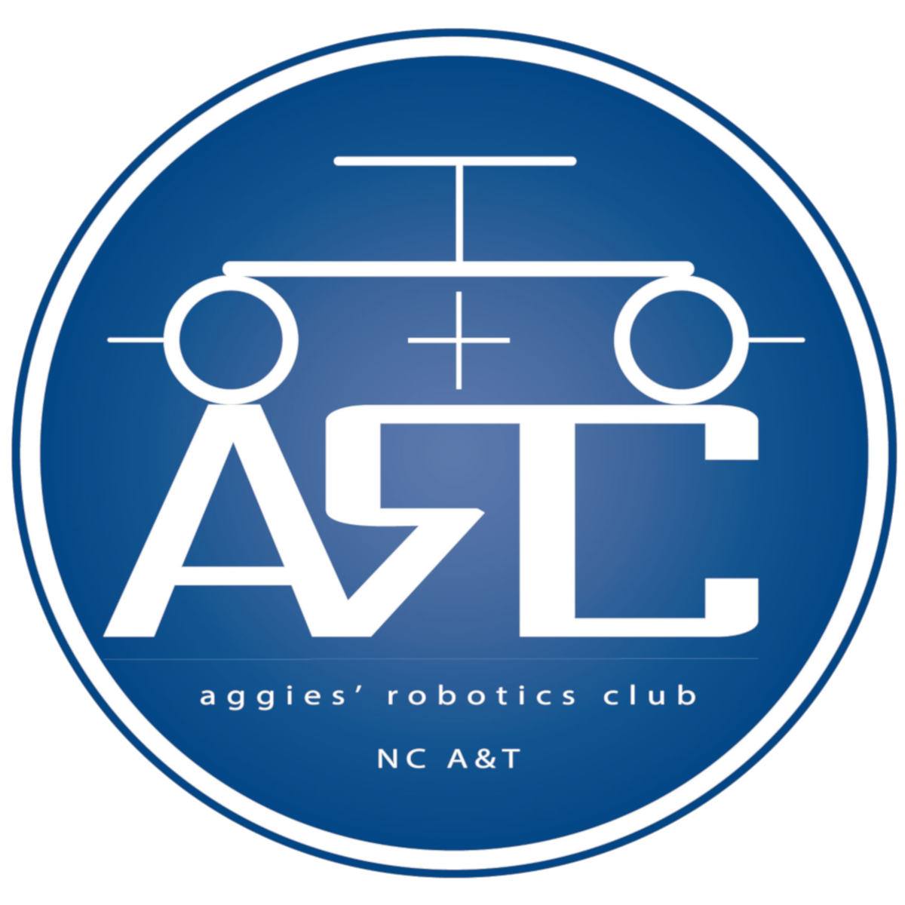
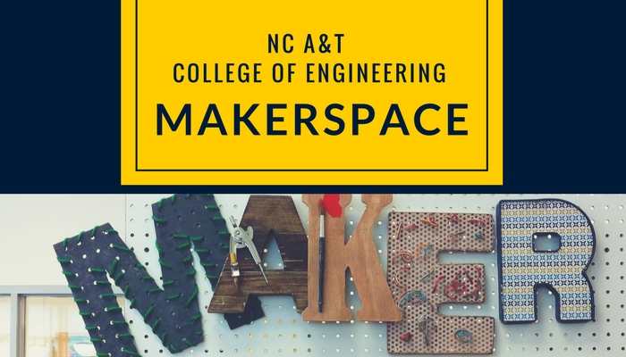

Hello, my name is Uriah Newkirk and I am a graduate of North Carolina A&T State University with a degree in Computer Engineering. I am currently searching for a position as a software engineer where I can apply the skills I've learned throughout college. When I'm not busy working I enjoy skateboarding and playing video games.
Throughout my studies I have work on a number of unique projects alone and with a team. It allowed me to develop my skills as an effective team member and leader. Here are a few of my favorites
The clubs I've had the chance to be apart of have also helped me along my journey. Whether it be teaching a small class or just working with other aspiring engineers, there's always something new to learn.
 The mission of the Aggie Robotics Club is to provide practical eduational opportunities and resources for free innovation in Robotics, Electircal Engineering, and Computer Science. As Secretary, my duties involved attending all board meetings and taking detailed notes on the topics being covered. I also worked closely with other board members in scheduling classes to teach general engineering concepts such as designing electrical circuits.
 The Aggie Makerspace exists to establish a unique, collaborative environment dedicated to learning, discovery, and community engagement. By providing students with a plethora of equipment, technologies, and resources, we ensure the facilitation of creativity, problem solving, and innovation. As a SuperUser, my duties involved being trained on the machinery in the space so that I would be able to help these students in bringing their ideas to life.